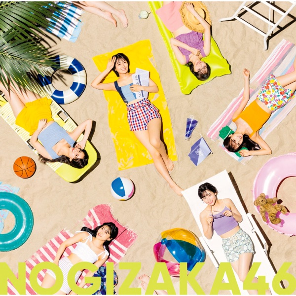

サカミチ
サカミチジャンピングジョーカーフラッシュじゃんぴんぐじょーかーふらっしゅ

初収録リリース「好きというのはロックだぜ!」のジャケット
乃木坂46
発売日：2022-08-31
収録：好きというのはロックだぜ!（30thSG）
種別：期別曲
センター：筒井あやめ
作曲：Kuboty
編曲：Kuboty
ライブ披露：46件
フォーメーション
上が後列、下が前列です。色付きがセンター。（参考データに基づく）
 柴田柚菜
柴田柚菜 掛橋沙耶香
掛橋沙耶香 弓木奈於
弓木奈於 松尾美佑
松尾美佑 田村真佑
田村真佑 黒見明香
黒見明香 清宮レイ
清宮レイ 金川紗耶
金川紗耶 北川悠理
北川悠理 佐藤璃果
佐藤璃果 林瑠奈
林瑠奈 矢久保美緒
矢久保美緒 賀喜遥香
賀喜遥香 筒井あやめ
筒井あやめ 遠藤さくら
遠藤さくら参加メンバー（15名）
遠藤さくら、賀喜遥香、掛橋沙耶香、金川紗耶、北川悠理、黒見明香、佐藤璃果、柴田柚菜、清宮レイ、田村真佑、筒井あやめ、林瑠奈、松尾美佑、矢久保美緒、弓木奈於
この曲が披露されたライブ（46件）
新しい順に20件まで表示しています（全46件）。
同じリリースの曲
好きというのはロックだぜ！、Under's Love、僕が手を叩く方へ、ジャンピングジョーカーフラッシュ、バンドエイド剥がすような別れ方、パッションフルーツの食べ方、夢を見る筋肉